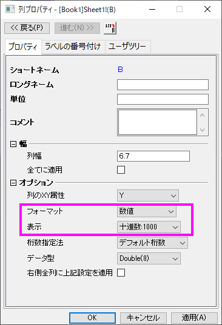
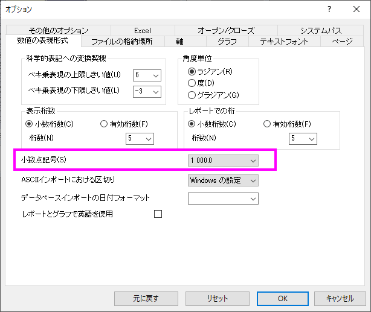

FAQ-989 10000の代わりに10,000として数字を表示するにはどうすればいいですか？
Display-thousand-separator-as-space
最終更新：2019/01/09
","や他の文字ではなくスペースとして千単位の区切り記号を表示するには（たとえば10000を "10,000"と表示することができます）
- 列ヘッダをダブルクリックして、列プロパティダイアログを開きます。 形式を数値にして、表示を10進数：1,000に設定します。OKをクリックしてください。
- 
- 環境設定：オプションを選択します。開いたダイアログで、数値の表現形式タブに移動します。区切り文字を1,000.0に設定します。
- 
キーワード：区切り記号、千単位